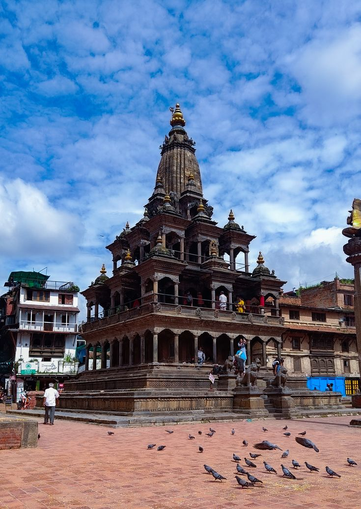
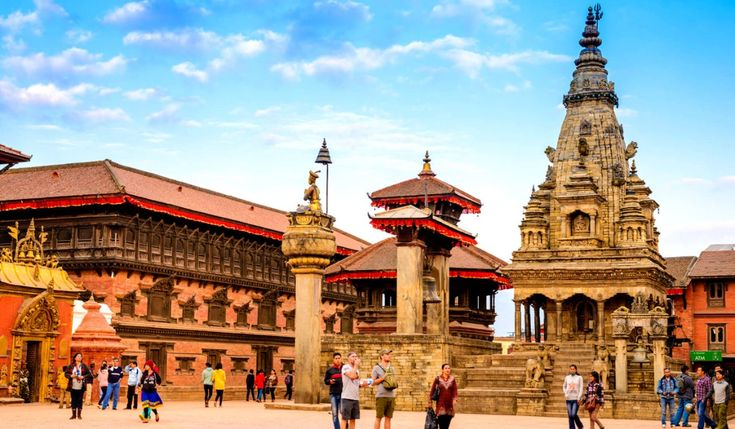
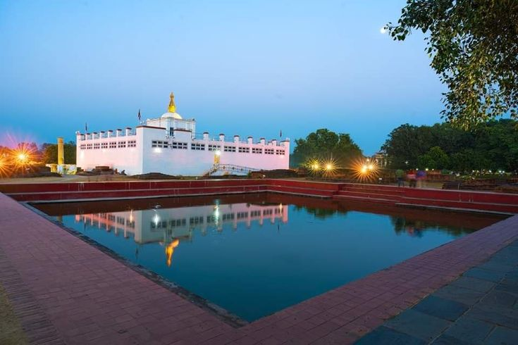
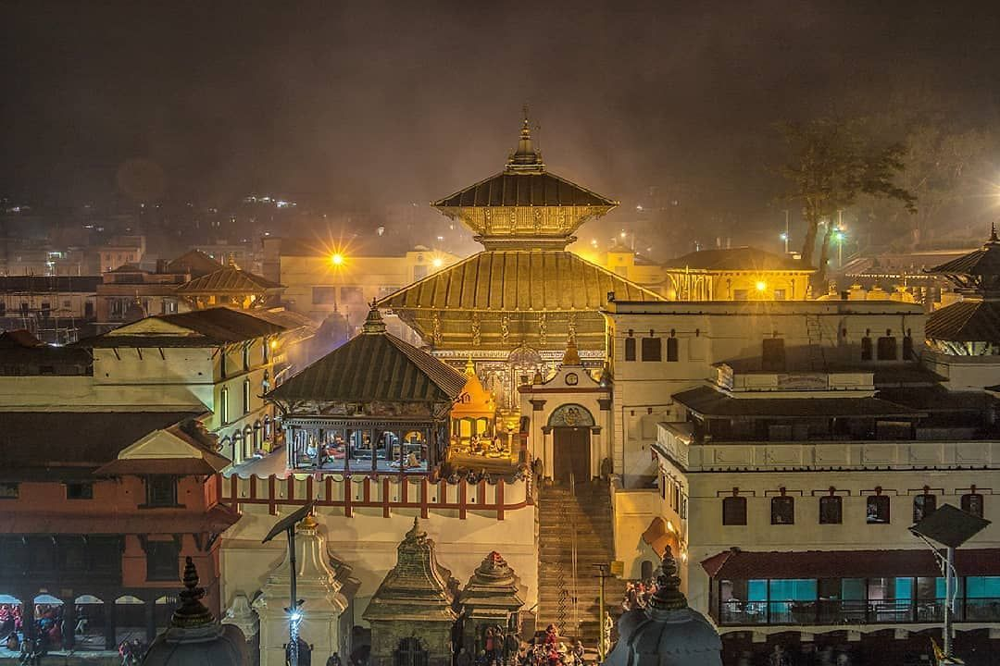
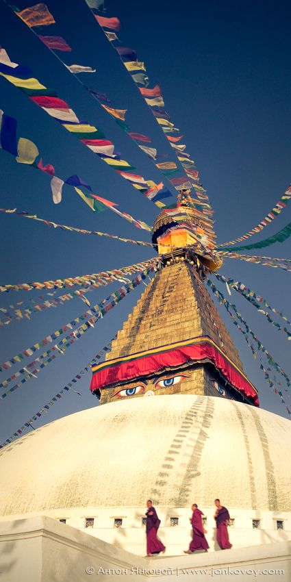
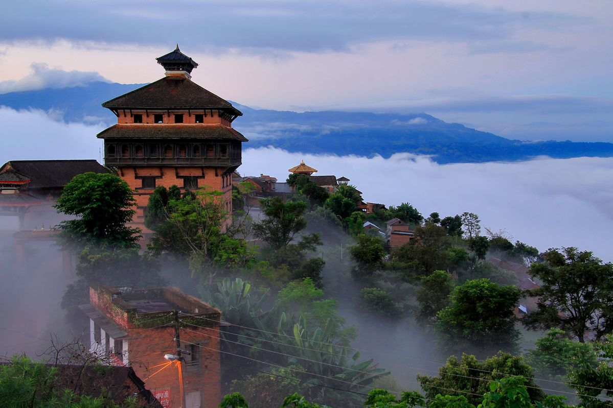
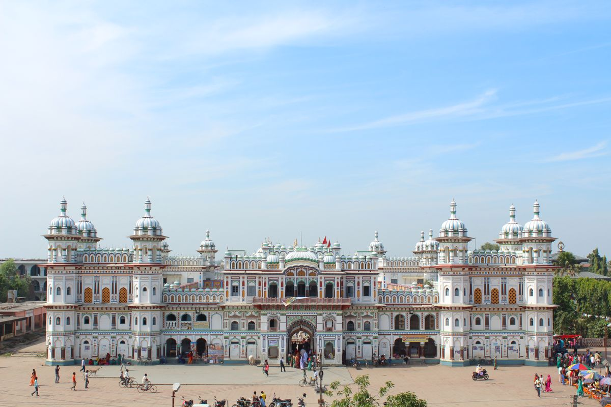

Historical Treasures
Explore 10 iconic sites that define the living history of Nepal.

Kathmandu Durbar Square
As the seat of the Malla and Shah kings, this square is a masterpiece of Newari architecture. It is immensely popular for housing the Kumari Bahal, where the world's only Living Goddess resides, and remains the epicenter of major cultural festivals like Indra Jatra.

Patan Durbar Square
Located in the "City of Fine Arts," this square is unique for its concentration of bronze and copper metalwork. It is famous for the Krishna Mandir, a stunning 17th-century temple built entirely of stone, representing the peak of craftsmanship in the valley.

Bhaktapur Durbar Square
Known as the "City of Devotees," this medieval square preserves an ancient atmosphere better than any other. It carries the Nyatapola Temple, Nepal's tallest pagoda, and the 55-Window Palace, showcasing incredible woodcarving and engineering that has survived multiple earthquakes.

Lumbini
As the documented birthplace of Siddhartha Gautama (Lord Buddha), Lumbini is one of the most sacred spiritual sites in the world. It is unique for its Monastic Zone, where different nations have built temples, and the ancient Ashoka Pillar which marks the exact birthplace.

Swayambhunath Stupa
Popularly known as the "Monkey Temple," this 2,000-year-old stupa sits atop a hill offering panoramic views. It is unique for its seamless blend of Hindu and Buddhist shrines, representing the religious harmony that defines Nepalese history and spirituality.

Pashupatinath Temple
The most sacred Shiva temple in the world, this complex is a vast gallery of shrines and statues. It is unique for its open-air cremation ghats on the Bagmati River, which carry deep spiritual significance regarding the cycle of life, death, and reincarnation in Hinduism.

Boudhanath Stupa
One of the largest spherical stupas globally, it serves as the center of Tibetan culture in Nepal. It is popular for its massive mandala base and the peaceful "Kora" ritual where devotees walk around the stupa spinning prayer wheels amidst the scent of burning incense.

Changunarayan Temple
Considered the oldest functional temple in Nepal, it is a living museum of stone carvings from the 4th century. Located on a ridge, it houses the country's oldest stone inscription, providing a unique historical window into the Licchavi dynasty and early Vaishnavism.

Gorakhnath
This hilltop fortress and palace was the ancestral home of the Shah Dynasty. It is unique as the birthplace of King Prithvi Narayan Shah, who unified modern Nepal. The site carries a powerful atmosphere of military history and spiritual power, overlooking the Manaslu range.

Nau Lakha Mandir
A stunning white marble masterpiece, this temple is unique for its fusion of Hindu Rajput and Mughal architecture. It is popular as the birthplace of Goddess Sita and carries a unique cultural identity influenced by the Mithila art and traditions of the Terai region.